樂器構造與零件功能
第 7 章・建議學習 1 小時
本章重點
- 曼陀林不是一堆零件的目錄，而是一條連續的受力與振動路徑：弦鈕 → 上弦枕 → 指板 → 琴橋 → 尾弦板。
- 改一個零件，其他地方會跟著變。 例如上弦枕太高，除了難按，還會讓低把位音偏尖。
- 琴格不會「自動保證準」。按弦時的伸長量與琴橋的補償，都會影響實際音準。
- 面板同時要「輕」和「強」，這是所有弦樂器面板設計的核心矛盾。
- 歷史上的曼陀林沒有單一標準構造。Vinaccia 1781 與 Gibson 1898，就是兩套成熟的結構哲學。
把曼陀林拆成琴頭、琴頸、指板、面板、琴橋、琴肚，看起來像是在做零件目錄。
但真正理解樂器結構，關鍵不在「記住零件名字」，而在這些零件如何形成一條連續的受力與振動路徑。
這條路徑長什麼樣子？
想像弦是一條被拉緊的繩子，沿著這條路線走：
| 順序 | 零件 | 它做什麼 |
|---|---|---|
| 1 | 弦鈕（tuning peg） | 把弦拉緊 |
| 2 | 上弦枕（nut） | 弦的第一個支點，決定空弦起點 |
| 3 | 指板／琴格（fingerboard／fret） | 讓左手把弦按到不同音高 |
| 4 | 琴橋（bridge） | 把弦的振動傳給面板 |
| 5 | 尾弦板（tailpiece） | 固定弦的另一端 |
這條路徑上，任何幾毫米的變化，都可能影響手感、音準、起音，甚至結構壽命。
打個比方：這就像腳踏車的煞車線。中間任何一段稍微卡住，你按把手的手感就會不一樣。
歷史上的曼陀林沒有「標準解剖」
| 琴 | 年份 | 構造特色 |
|---|---|---|
| Vinaccia 那不勒斯曼陀林 | 1781 | 深碗圓背、折面 spruce soundboard、八根弦、木製弦軸 |
| Orville Gibson 美式琴 | 1898 | spruce 雕刻拱面、背側大量採 walnut、浮動琴橋、尾弦板、空心琴頸 |
把這兩把琴放在一起，比死背「標準構造」，更能看出曼陀林為什麼會有那麼多流派。〔S701〕〔S702〕
本章的主線是三段：受力 → 演奏幾何 → 振動傳遞。
每個零件都會回答三個問題：
- 它承受什麼力？
- 它怎麼影響演奏者？
- 它和其他零件之間有什麼連鎖關係？
這樣到了後面的聲學、製琴與 Setup（設定調整）章節，就能沿著同一個結構邏輯繼續深入。
7.1 琴弦張力與受力路徑
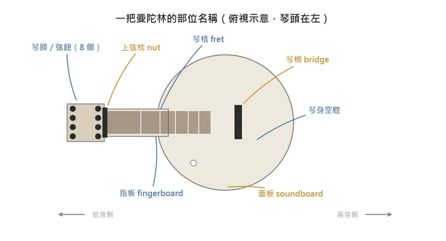
圖 G 一把曼陀林的部位名稱（俯視示意，琴頭在左）。
曼陀林的八根琴弦在調音後，會持續拉扯樂器。
這股力沿著琴頭、琴頸、琴身、琴橋與尾弦板，形成一個封閉的力學迴路。
| 零件 | 承受什麼 |
|---|---|
| 琴頸 | 要抵抗向前彎曲 |
| 面板 | 要承受琴橋傳入的壓力與剪力 |
| 尾弦板及其固定處 | 承擔琴弦另一端的拉力 |
結構設計的第一個任務，就是確保琴在合理張力下，不會逐漸失去幾何。
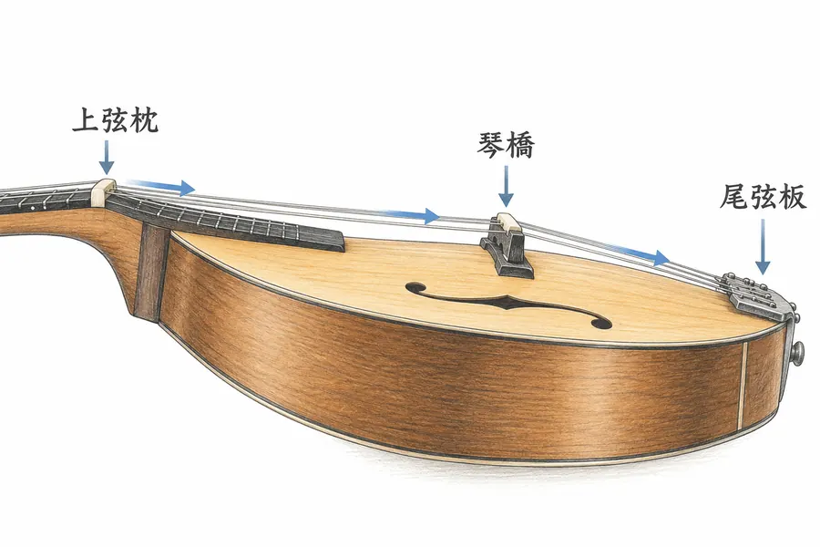
圖解 7.1 琴弦張力與受力路徑（示意）
為什麼不能單獨看某個零件
假設琴橋高度增加，會發生什麼事？
- action（弦距，弦離指板的高度）可能升高。
- 琴弦越過琴橋的折角（break angle）也會改變。
- 折角改變，琴橋對面板的載荷分量也跟著改變。
再看另一個例子：上弦枕過高。
表面上看，只是左手比較難按。但實際上，它還會讓第一把位按弦時產生額外的拉伸，使音高偏尖。
真正專業的結構閱讀，永遠是在看「改一處，其他地方跟著怎麼變」。
【常見誤解】
誤解：「上弦枕太高，只是比較難按而已。」
事實：它會讓低把位按弦時弦被額外拉長，音高偏尖。這是幾何造成的，不是你的耳朵有問題。
中古琴更要這樣看
對中古琴尤其如此。
一把琴的琴橋可能不是原配，指板可能曾經重整，琴頸角度可能因為多年張力與濕度變化而改變。
只把零件名稱認出來，還不足以判斷狀態。
要觀察的是：它們彼此的相對位置是否仍在合理範圍內。
這也是本章最後的案例分析會反覆練習的能力。
7.2 琴頭與調音機構
早期曼陀林常使用類似小提琴的木製弦軸。
1781 年 Vinaccia 的實物上，可以看到八個由琴頭後方插入的 fiddle-style pegs（小提琴式弦軸）。
這種機構沒有齒輪減速，調音靠弦軸與孔壁的摩擦力。
操作手感、穩定性，和現代機械弦鈕完全不同。
後來金屬弦、較高張力與更頻繁的合奏使用成為常態，齒輪式弦鈕提供了更細緻的調整能力，也降低了日常調音的門檻。〔S701〕
三種常見配置
| 類型 | 常見於 | 特點 |
|---|---|---|
| 木製摩擦式弦軸 | 早期曼陀林 | 無齒輪減速，靠摩擦力 |
| 成組機械式弦鈕（內藏式或側置） | 現代圓背琴，如 Calace | 調整細緻，較穩定 |
| 四對弦鈕沿琴頭兩側排列 | 美式 A／F-style | 排列方式不同 |
這些差異不只是美觀。
琴弦離開上弦枕後前往弦鈕的方向，會影響弦在 nut slot（上弦枕弦槽）內的側向摩擦。
琴頭角度則會影響上弦枕處的下壓分量。
設計得不理想或加工粗糙時，調音容易出現一種討厭的黏滑現象：「轉了半圈沒反應，突然一下跳過頭」。
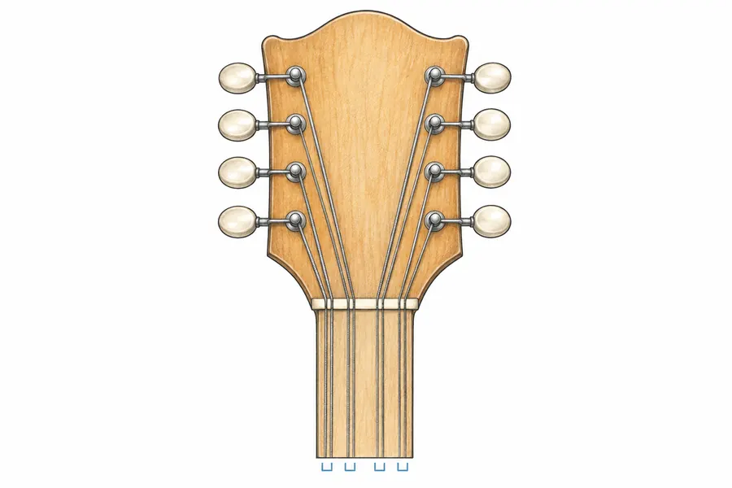
圖解 7.2 琴頭與調音機構（示意）
調音不穩，先別急著換弦鈕
調音不穩時，很多人的第一反應是換高級弦鈕。
但真正的問題，可能在上弦枕。
如果弦槽寬度與弦徑不匹配、槽底粗糙，或琴弦路徑急轉，弦就會在上弦枕處卡住。
這時弦鈕本身即使沒有回程間隙，也可能呈現不穩定。
診斷時，應該區分三種不同來源：
| 症狀 | 可能來源 |
|---|---|
| 轉一點點沒反應，再轉就跳過頭 | gear backlash（齒輪回程間隙） |
| 弦鈕轉起來鬆鬆的，撐不住 | 弦軸摩擦不足 |
| 轉了有反應，但弦在某處卡卡的 | nut binding（上弦枕卡弦） |
依症狀逐項排查，而不是一次換掉所有東西。
7.3 上弦枕與低把位手感
上弦枕（nut） 通常很小，但它同時決定四件事：
- 空弦的起點
- 弦距
- 弦槽高度
- 琴弦進入琴頭的路徑
對有琴格的樂器而言，弦槽太高的後果特別明顯。
演奏者按下第一、二格時，必須把琴弦向下拉更遠。除了手感變硬，琴弦還會被額外拉長，導致低把位按弦音偏尖。
這種偏尖是幾何造成的。
弦槽太低也不行
弦槽太低，會造成另一組問題：空弦可能撞到第一格，出現 buzz（打弦雜音）。
如果只有一組弦異常，還要進一步判斷原因：
- 槽深？
- 槽角？
- 弦徑？
- 琴格高度？
理想的弦槽，要讓琴弦在上弦枕靠指板的一側有清楚的有效接觸點，之後平順下降到琴頭。
如果接觸位置模糊，空弦的有效弦長就會變得不穩定。
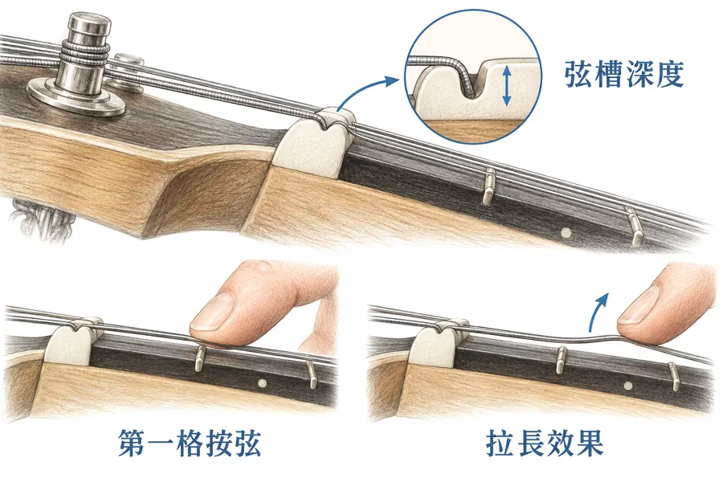
圖解 7.3 上弦枕與低把位手感（示意）
打個比方：上弦枕就像跑道上的起跑線。起跑線模糊，每一趟的距離就不一樣。
複弦樂器多一個問題
同一 course 的兩根弦，如果槽距不均、深度不同：
- 右手撥擊時的阻力會不一致。
- 左手按弦感也會不一致。
對標準曼陀林而言，八個弦槽更準確地說，是四組需要成對工作的幾何。
這也是為什麼換到明顯不同 gauge（弦徑規格）的弦組時，不一定只是「裝上去就好」。
如果弦徑和槽寬差異太大，Setup 可能必須跟著調整。
7.4 琴頸角度與指板
琴頸是左手握住的部位。但從結構上看，它更像一支把弦張力和琴身連接起來的樑。
琴頸的厚度、材料、截面形狀與接合方式，都會影響剛性。
更關鍵的是 neck angle（琴頸角度），也就是指板平面相對於琴身與琴橋的幾何關係。
neck angle 若逐年變小，演奏者可能會發現：action 越來越高，卻已經無法再把琴橋降下去。
這時問題的根源，在整套幾何，不在琴橋。
不同傳統的琴頸差很多
Orville Gibson 的 1898 年設計，甚至把琴身側部、琴頸與琴頭視為可以整體雕出的結構，並讓琴頸內部中空、與琴腔連通。
Met 保存的 1898 年實物，正具有這種特徵。
這不是今日所有 Gibson 曼陀林都沿用的做法。但它很好地說明了：「琴頸」並非只是一塊握把，而可以被納入整體的聲學與結構設計。〔S702〕〔S703〕
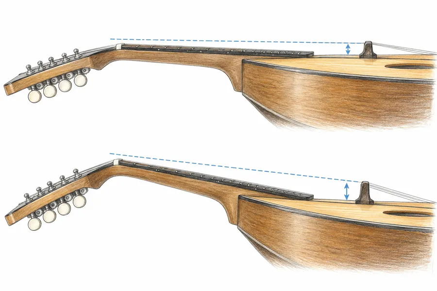
圖解 7.4 琴頸角度與指板（示意）
指板與琴格數
指板提供琴格的安裝基準。
材料需要耐磨、尺寸相對穩定，也要能承受反覆按弦與 fretwork（琴格施工）。
琴格數的演變，可以看成一條時間軸：
| 琴 | 年份 | 琴格數 |
|---|---|---|
| Vinaccia | 1781 | 13 個金屬琴格 |
| Orville Gibson | 1898 | 18 格 |
| Calace 標準型號 | 現代 | 24 格 |
| Calace concert 系列 | 現代 | 可到 29 格 |
格數變多，不只代表最高音域提高。
它也反映 repertoire（曲目）、把位技巧與舞台需求的擴張。〔S701〕〔S702〕〔S711〕
7.5 琴格與音高控制
琴格把連續的指板切成離散的半音位置，讓按弦音高更容易重複。
對曼陀林這種快速撥弦樂器而言，這大幅降低了旋律音準的負擔，也讓和弦與雙音更容易穩定。
但琴格不會「自動保證準」。
實際音準會受四個因素共同影響：
| 因素 | 影響 |
|---|---|
| 琴格位置 | 決定理論音高 |
| fret crown 的接觸點 | 弦實際接觸的位置 |
| 琴弦按下時的伸長量 | 張力上升，音會變高 |
| 琴橋補償 | 修正整體與分弦音準 |
真實的弦不是理想弦
十二平均律（把八度平均分成十二個半音的調律法）的理論位置可以精確計算。
但真實琴弦不是「沒有剛性的理想弦」。
尤其是：
- 粗的 wound string（纏繞弦，外層繞線的弦）
- 較高的 action
- 較強的按弦力量
這些都可能讓按下去的音，比理論位置略尖。
所以浮動琴橋常需要整體或分弦補償。
這也是為什麼「把琴橋放在剛好兩倍十二格距離」只能當初始位置，不能當最終設定。
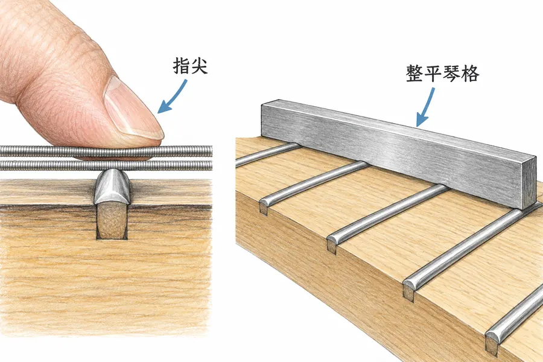
圖解 7.5 琴格與音高控制（示意）
琴格磨耗
琴格磨耗也會改變有效接觸點。
某幾格出現凹槽時，弦可能更容易碰到下一格。
如果只把單一高格磨低，又可能破壞整體的 fret plane（琴格平面）。
專業的 fretwork，重點是建立一條與琴頸 relief（琴頸的微彎量）、目標 action 相容的整體平面，讓各琴格與整體弦路相配合。
【常見誤解】
誤解：「某一格打弦，就把那一格磨低就好。」
事實：只磨單一格，可能破壞整體琴格平面。專業做法是建立一條與琴頸 relief、目標 action 相容的整體平面。
7.6 面板的振動與承重
面板（soundboard／top） 同時扮演兩個看似矛盾的角色：
| 角色 | 要求 |
|---|---|
| 發聲 | 要夠輕、夠容易被琴橋驅動 |
| 承重 | 要夠穩定，承受長期弦力與琴橋載荷而不失去幾何 |
這個「輕與強」的拉扯，是所有弦樂器面板設計的核心。
義大利 bowlback 曼陀林傳統大量使用 spruce（雲杉）。現代 Calace 仍延續這個做法。
2022 年義大利曼陀林聲學研究，也把 soundboard wood（面板木材）的機械性質列為關鍵研究變數。〔S705〕〔S711〕
打個比方：面板就像彈簧床的床面。床面要夠軟，人才彈得起來；但要夠韌，才不會被踩破。
那不勒斯式的折面
那不勒斯式面板的一大特徵，是琴橋附近具有折面或 cant。
Met 對 1781 Vinaccia 的說明，以及 Guitar Heroes 專文，都指出這個 bend 是那不勒斯學派的重要結構特徵，與增加結構強度有關。
它讓面板不再是單純的平板，而形成一個帶幾何剛性的折面系統。〔S701〕〔S722〕
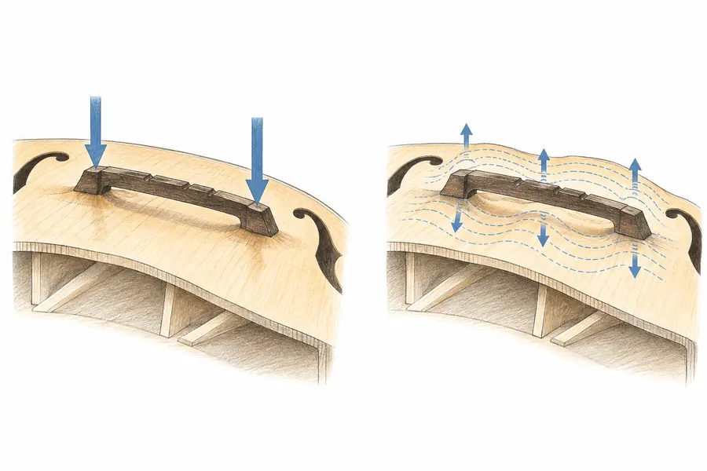
圖解 7.6 面板的振動與承重（示意）
美式 carved-top 走另一條路
美式 carved-top 則採另一條路。
Orville Gibson 把 spruce 面板雕成凸拱，讓厚度與拱度共同提供剛性。
這種設計和 violin family（小提琴家族）在外觀與受力思維上有相似之處。
但不能直接說成「把小提琴面板縮小」。
真正的工作方式，仍取決於琴橋位置、bracing、音孔與整體尺寸。〔S702〕〔S720〕
【常見誤解】
誤解：「Gibson 的拱面曼陀林就是縮小版的小提琴面板。」
事實：外觀與受力思維有相似處，但不能直接畫等號。實際工作方式仍取決於琴橋位置、bracing、音孔與整體尺寸。
7.7 力木與內部支撐
力木（bracing） 的位置和尺寸，會改變面板的局部剛性與振動模態。
它們不是單純的「防塌木條」，也不是「越輕越好」。
| 力木狀態 | 後果 |
|---|---|
| 太弱 | 可能無法長期承受載荷 |
| 太重 | 提高局部質量與剛性，使某些模態移動 |
真正的設計工作，是在結構安全與振動效率之間取得平衡。
不同型制的 bracing 邏輯不一樣
早期 Orville Gibson 的專利，甚至明確批評當時樂器過多的內部 braces、bridges 與 splices（拼接）。
他主張用較一體化的 carved construction，減少這些零件。
Met 的 1898 年實物說明也指出：該琴沒有傳統的內部 brace／strut。
後來 Gibson 系統又發展出不同的 bracing 方法，顯示「少 brace」本身是某個設計時期的整體哲學。
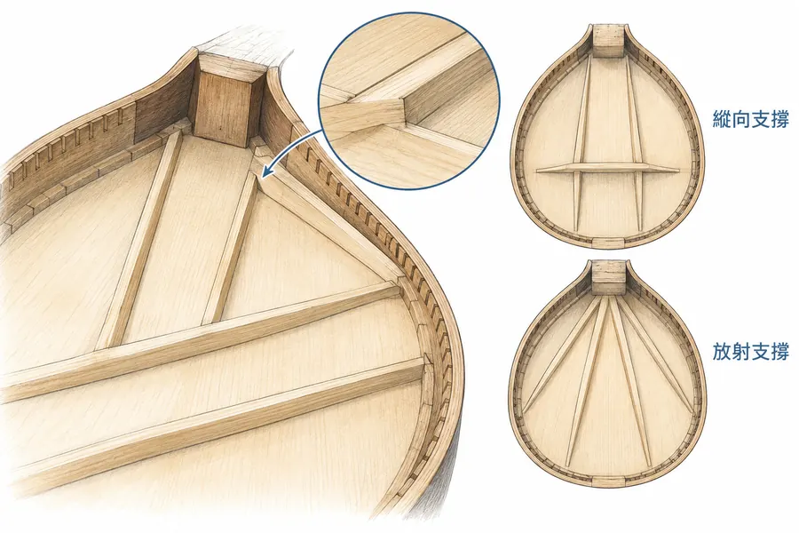
圖解 7.7 力木與內部支撐（示意）
所以不能把「Gibson 不用力木」當成通則。不同時期、不同型號，做法不同。〔S703〕〔S720〕
對維修的提醒
對維修而言，力木脫膠常比外觀裂痕更難察覺。
症狀可能是：
- 特定音出現 buzz
- 面板局部異常振動
- 敲擊檢查時，聲音和別處不同
如果只看外表，很容易把問題誤判成琴橋或琴弦。
這也提醒讀者：曼陀林的「解剖」，有一半藏在看不到的琴腔裡。
7.8 琴肚、背板與側板
圓背：多條 ribs 拼成碗狀
圓背曼陀林的琴肚，由多條狹長 ribs（肋片）拼合成碗狀。
1781 Vinaccia 的背部由 23 條窄帶構成，材料甚至使用玳瑁與象牙隔條。
這顯示當時的高級樂器，同時具有聲學、結構與裝飾三種功能。
現代 Calace 則可見 25、31、33，甚至 mandoloncello 的 41 條 ribs 的不同設計。材料則常見 rosewood（玫瑰木）或 maple（楓木）。
琴肚肋片數，應該與曲率、單片寬度、工藝與設計系列一起判讀。〔S701〕〔S711〕〔S713〕
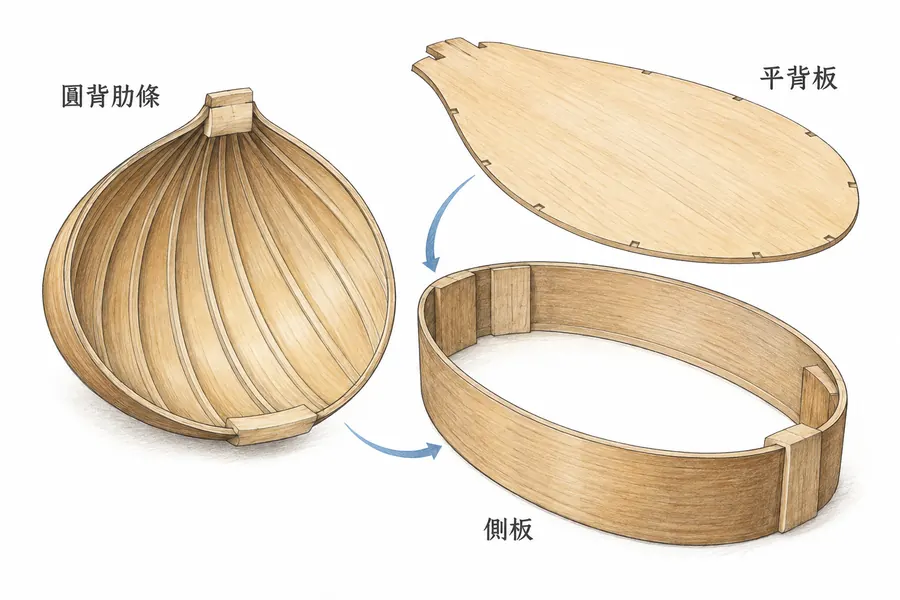
圖解 7.8 琴肚、背板與側板（示意）
平背或 carved-back：完全不同的邏輯
1898 Gibson 的背部，是一塊雕成凸面的 walnut（胡桃木），側部與空心琴頸又採高度一體化的做法。
這使琴身不需要靠多條窄 ribs 形成深碗。
它也改變了內部容積、板材受力與製造流程。〔S702〕
背板到底發不發聲？
這個問題常被簡化成二分法：
- 有人說：背板只是反射。
- 有人說：背板和面板一樣重要。
實際上，聲學量測顯示整個琴體都參與模態。
背部與側部的移動量和頻率分布，會因設計而異。
更準確的說法是：
背部不是無關緊要，但它的貢獻不能脫離整體結構單獨描述。
〔S704〕〔S705〕
【常見誤解】
誤解：「背板只是把聲音反射回去，不參與發聲。」
事實：量測顯示整個琴體都參與模態。更準確的說法是：背部不是無關緊要，但它的貢獻不能脫離整體結構單獨描述。
7.9 音孔與空氣共鳴
音孔讓琴腔內部空氣和外界耦合，也會改變面板的有效面積與局部剛性。
所以它同時是聲學開口，也是結構切口。
圓孔、橢圓孔、f-hole（f 形音孔）或現代側孔，各自改變的重點，都在整個琴體與空氣模態的條件。
各型制的常見音孔
| 型制 | 常見音孔 |
|---|---|
| 那不勒斯圓背 | 單一圓形或橢圓形中央音孔 |
| 早期 Gibson A／F 系列 | 多使用橢圓孔 |
| 後來 F-5 系譜 | f-hole（成為 bluegrass 文化裡的強烈視覺符號） |
問題在於：音孔形狀往往和琴體尺寸、bracing、bridge location 一起改變。
所以不能做「f-hole 一定比較亮」「橢圓孔一定比較暖」這種單因果比較。〔S719〕〔S720〕
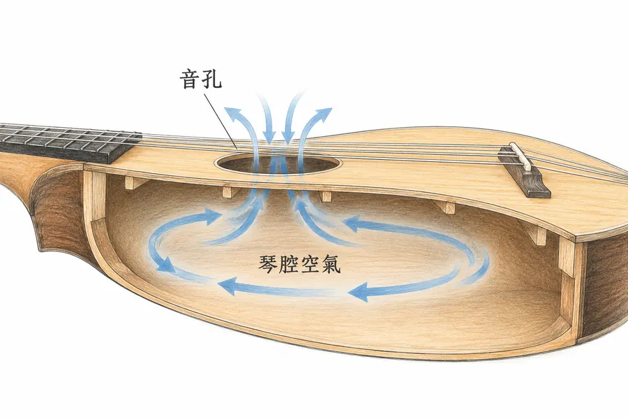
圖解 7.9 音孔與空氣共鳴（示意）
研究音孔時，最有用的問題是：
- 它改變哪些空氣與面板模態？
- 位置和面積與琴體容積如何配合？
這些問題會在下一章（第 8 章）以聲學量測的語言繼續處理。
7.10 琴橋、尾弦板與折弦角
浮動琴橋（floating bridge） 靠琴弦下壓維持位置。
它做兩件事：
- 設定弦高與有效弦長。
- 把弦的振動力傳到面板。
音量不是一個旋鈕
橋越高、尾弦板越低，不一定就「聲音更大」。
因為以下幾件事會同時改變：
- break angle（折弦角）
- 下壓分量
- 琴橋質量
- 接觸面
- 面板承載
把單一幾何參數當成「音量旋鈕」，是常見但危險的簡化。
【常見誤解】
誤解：「琴橋墊高一點，聲音就會變大。」
事實：折弦角、下壓分量、琴橋質量、接觸面與面板承載會同時改變。音量不是單一旋鈕。
琴橋腳底必須貼合
琴橋腳底必須和面板充分貼合。
如果只有兩端或局部接觸，除了能量傳遞不均，還可能在長期載荷下造成局部壓痕。
carved-top 曼陀林的曲面更明顯，因此琴橋 fitting（琴橋與面板的密合加工）尤其重要。
換一顆「高級橋」，如果沒有重新配合面板曲率，未必比原本的琴橋好。
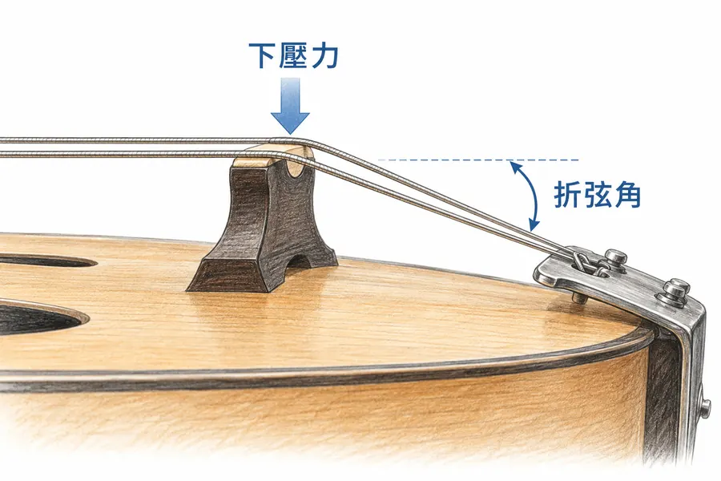
圖解 7.10 琴橋、尾弦板與折弦角（示意）
尾弦板
尾弦板的任務，是固定琴弦尾端，並決定琴橋後方弦段的幾何。
它本身的質量、剛性與固定方式，也可能產生機械共振或雜音。
診斷神祕的 buzz 時，除了琴格和琴橋，還值得檢查：
- 尾弦板蓋板
- 弦尾互碰
- 鬆動的螺絲
- 弦鈎
7.11 案例 三種結構系統
把 1781 Vinaccia、1898 Orville Gibson 和現代 Calace 放在同一張表裡，可以看到「曼陀林」這個名稱底下，至少有兩套成熟的結構哲學。
Vinaccia 以深碗 ribs、折面 spruce top、木製弦軸和短指板構成。
Gibson 以 carved spruce top、carved walnut back、浮動琴橋與 tailpiece、空心琴頸構成。
現代 Calace 則在那不勒斯圓背脈絡中，加入精密機械弦鈕、24／29 格指板與不同 ribs 配置。〔S701〕〔S702〕〔S711〕
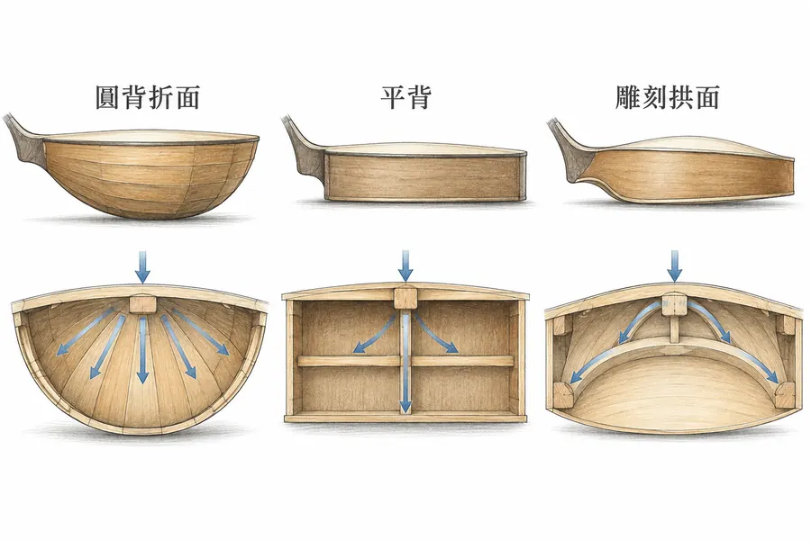
圖解 7.11 案例 三種結構系統（示意）
表 7-1｜三種結構系統的實物比較
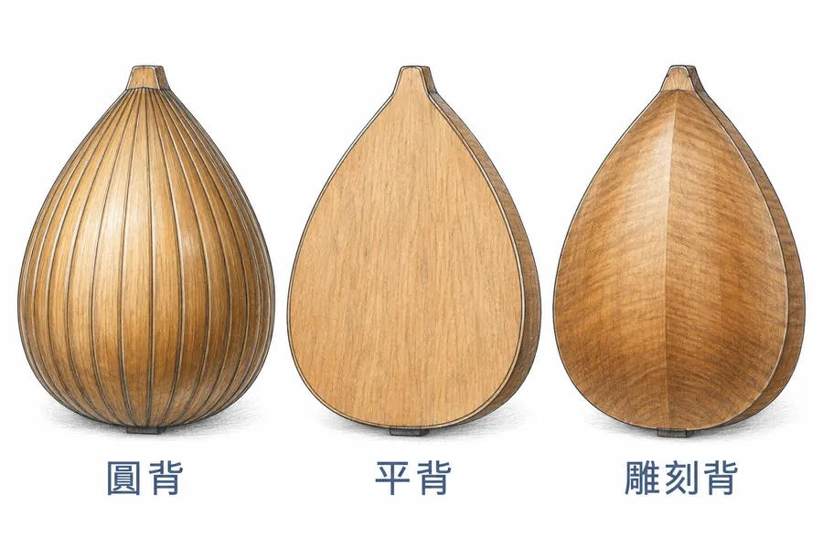
| 案例 | 琴體／背部 | 面板 | 調音／指板 | 讀法 |
|---|---|---|---|---|
| Vinaccia 1781 | 23 ribs bowlback | spruce；橋附近折面 | 木弦軸；13 格 | 成熟那不勒斯式 |
| Orville Gibson 1898 | carved walnut back；一體化 sides／neck | carved spruce | 機械系統；18 格 | 美式 carved-body 初期 |
| Calace 現代 | 25–33 ribs；rosewood／maple | fine spruce | 機械弦鈕；24／29 格 | 現代 concert 圓背 |
圖解 表 7-1｜三種結構系統的實物比較（示意）
三者的重點整理：
- Vinaccia 1781：23 條圓背 ribs、13 格、木製弦軸。
- Orville Gibson 1898：carved spruce top、carved walnut back、18 格、浮動琴橋與 tailpiece。
- 現代 Calace：33.5 cm 弦長、24 或 29 格、25–33 ribs。
這三者都叫 mandolin，卻代表不同的結構哲學。
用「結構閱讀」而不是「外觀分類」
如果只用外觀分類，讀者容易把它們分成「圓的」「扁的」。
如果用結構閱讀，就會看到它們對同一組問題給出不同答案：
| 共同的問題 | 各自怎麼答 |
|---|---|
| 如何承受弦力？ | 三套不同方案 |
| 如何提供面板剛性？ | 折面／拱面／bracing |
| 如何讓演奏者到達高把位？ | 琴頸幾何不同 |
| 如何調音？ | 木軸 vs. 機械弦鈕 |
| 如何維修？ | 結構可及性不同 |
這種比較方式，比記一串品牌史更能理解製琴演化。
反向利用：拿結構思路來診斷
實務上，也可以把這套思路反過來診斷問題：
| 症狀 | 先檢查什麼 |
|---|---|
| action 偏高 | neck angle 和 top geometry（面板幾何） |
| 低把位偏尖 | nut slot（上弦枕弦槽） |
| 高把位局部 buzz | fret plane 與 relief（琴頸彎度） |
| 聲音突然變薄 | 除了換弦，也檢查琴橋位置與腳底接觸 |
結構名稱在這裡，才真正變成工具。
【常見誤解】
誤解：「琴橋已經低到不能再降，action 還是很高，那就再把橋削薄。」
事實：更可能是 neck angle、面板變形，或整體幾何已經偏離。需要先判斷根因，不要急著削琴橋。
自我學習題庫

學習檢查：作答、核對、複習
先自己作答，再看答案。答錯時回到本章相關小節重新讀一次。
1. 上弦枕太高，常見結果是？
- A. 低把位較難按且可能偏尖
- B. 琴聲一定更大
- C. 指板變短
- D. 尾弦板脫落
2. 琴橋在發聲鏈中的重要工作是？
- A. 固定背帶
- B. 把弦的能量傳入琴體
- C. 裝飾琴面
- D. 降低所有泛音
3. Neck angle 主要關係到？
- A. 琴漆乾燥
- B. 指板與琴橋的幾何
- C. 品牌名稱
- D. 弦材顏色
答案：1.A 2.B 3.B
本章主要查證來源

查證來源：找原文、核條件、留紀錄
【S701】The Metropolitan Museum of Art：Mandolin, Antonius Vinaccia, Naples, 1781（Met 89.4.2140）。 那不勒斯式圓背、23 條琴肚肋條、折面面板、八弦四 course、13 格等實物資料。
https://www.metmuseum.org/art/collection/search/504543
【S702】The Metropolitan Museum of Art：Mandolin, Orville Gibson, 1898（Met 2015.643a–c）。 carved spruce top、carved walnut back、浮動琴橋、尾弦板、18 格、空心琴頸等實物資料。
https://www.metmuseum.org/art/collection/search/700485
【S703】United States Patent Office / Google Patents：US598245A – Mandolin, Orville H. Gibson（patented 1898-02-01）。 Gibson 一體式 rim/neck/head、carved top/back 與減少傳統內部支撐的原始專利。
https://patents.google.com/patent/US598245A/en
【S704】David Cohen & Thomas D. Rossing：The acoustics of mandolins（Acoustical Science and Technology 24(1), 2003）。 四把曼陀林與一把 mandola 的 normal modes、頻率響應與 TV holography 研究。
https://www.jstage.jst.go.jp/article/ast/24/1/24_1_1/_article/-char/en
【S705】Quintavalla et al.：The Acoustics of Traditional Italian Mandolins and Their Relation with Soundboard Wood Properties（International Journal of Wood Culture 2, 2022）。 義大利歷史與現代曼陀林的 bridge admittance、聲輻射、模態與 soundboard wood 研究。
https://www.sciencedirect.com/org/science/article/pii/S2772318622000017
【S711】Liuteria Calace：Mandolini – official specifications（accessed 2026-10-06）。 33.5 cm 弦長、24/29 格、25/31/33 ribs、spruce top、rosewood/maple body 等現行規格。
https://www.calace.it/en/mandolini
【S713】Liuteria Calace：Mandoloncelli & Liuti – official specifications（accessed 2026-10-06）。 61 cm scale、8/10 弦、25/41 ribs、不同琴體尺寸與材料配置。
https://calace.it/en-mandoloncelli-liuti
【S719】The Metropolitan Museum of Art：Gibson F-2, F-4, A-4 and H-2/H-4 instruments（1916–1919 collection records）。 早期 Gibson A/F/H 系列 carved construction、格數、琴頸／指板材料與浮動琴橋實物比較。
https://www.metmuseum.org/art/collection/search/506859
【S720】The Metropolitan Museum of Art：Archtop Guitars and Mandolins（Met Heilbrunn Timeline essay）。 Orville Gibson carved archtop 系統與其美國製琴影響。
https://www.metmuseum.org/essays/archtop-guitars-and-mandolins
【S722】The Metropolitan Museum of Art：Mandolin, 1781 – Guitar Heroes（exhibition essay）。 那不勒斯式折面提高結構強度、四組複弦、小提琴式調弦與撥片使用背景。
https://blog.metmuseum.org/guitarheroes/mandolin-1781/